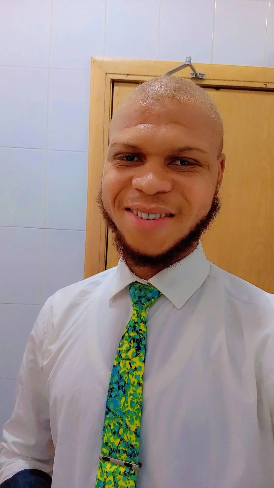

Great Onyemaechi(jnr) Joseph | WDD 130
Hello, my name is Great Joseph, and I am currently a student at Brigham Young University - Idaho (BYU-Idaho), where I am pursuing a degree in Web Design and Development. I am thrilled to be on this academic journey because web development and design are fields that constantly evolve, offering endless opportunities for creativity and technical growth. These areas of study not only allow me to combine my love for technology with my creative side but also empower me to solve problems in innovative ways. From an early age, I’ve been fascinated by the idea of how the internet connects people and makes information accessible worldwide. This curiosity eventually led me to pursue web development, as I realized how impactful a well-designed website could be for communication, business, and education. As a student in this field, I have had the opportunity to dive deep into the intricacies of HTML, CSS, JavaScript, and other essential web technologies. I’ve gained hands-on experience in designing responsive websites, optimizing user experiences, and understanding the importance of accessibility and usability. One thing that excites me about web development is how fast the industry changes. Every day brings new tools, languages, and best practices that push developers and designers to continually learn and adapt. I see this as an incredible opportunity to grow, and I’m always eager to explore new frameworks, libraries, and trends that help improve the functionality and design of websites. For instance, I’m particularly excited to delve into front-end development, where creativity and coding go hand-in-hand to create seamless and interactive user experiences. But I also recognize the importance of back-end technologies, such as databases and server-side scripting, to build fully functional websites and applications. My journey at BYU-Idaho has not only been about learning technical skills but also about developing a mindset of continual improvement. I’m a hardworking individual, always seeking ways to improve my understanding of the technologies I work with. Whether it’s through online tutorials, collaborative projects, or asking for feedback from peers and professors, I believe that growth comes from pushing yourself out of your comfort zone and embracing challenges. The process of trial and error is something I’ve learned to appreciate, as it ultimately leads to mastery.